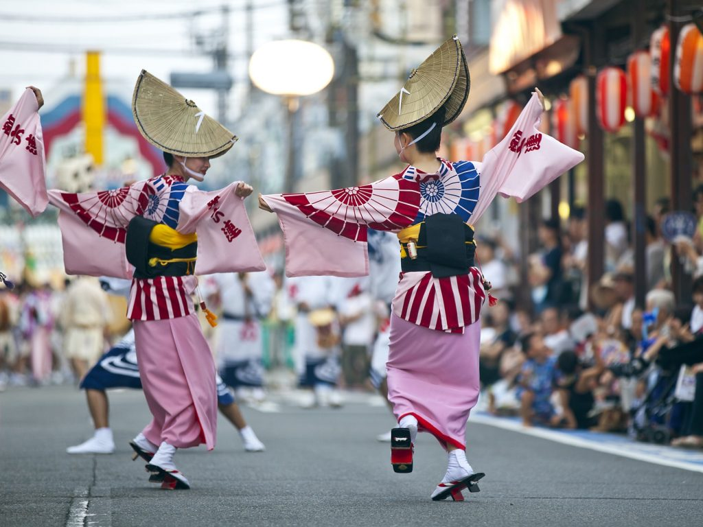
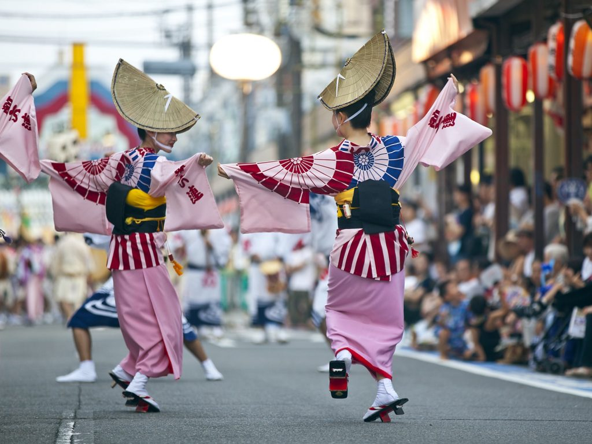
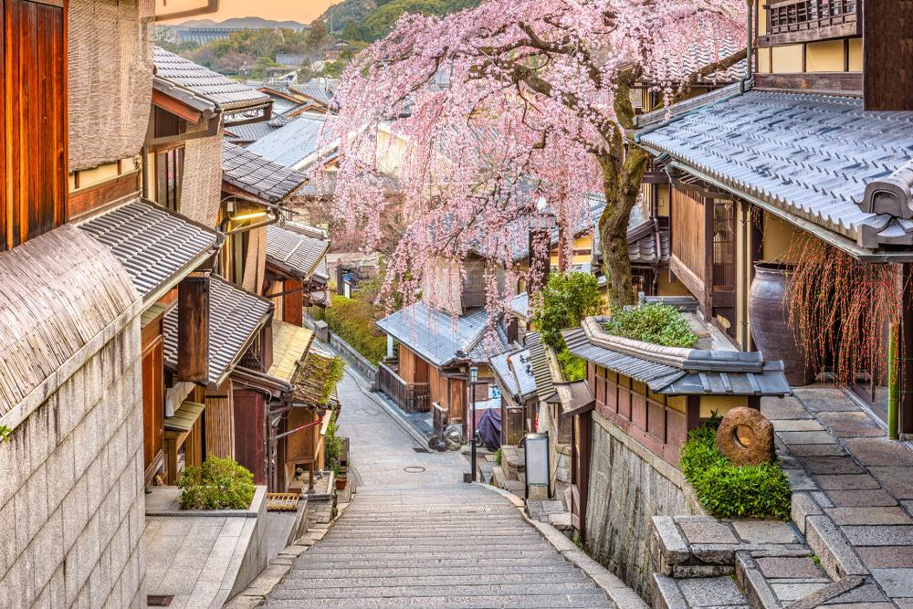
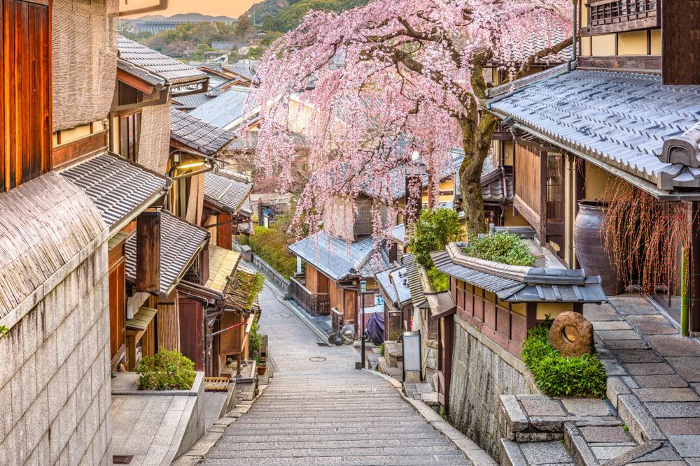

🌤️ Current Weather
Temperature: 45°F
Wind Speed: 5 mph
Wind Chill: N/A
🌸 Why Visit Japan?
From timeless temples and vibrant festivals to ultra-modern cities and serene countryside, Japan invites you into a world where tradition and innovation harmonize. Spring’s cherry blossoms, flavorful dishes, ancient neighborhoods, and breathtaking landscapes make it a dream destination for travelers seeking wonder and culture.
📸 Explore More of Japan
 



 

🌟 Interesting Facts About Japan
- There are more pets than children in Japan.
- Japanese trains are the most punctual in the world — delays average under a minute!
- Slurping noodles is considered polite and shows appreciation.
- Japan has vending machines that sell everything from umbrellas to ramen.
- There's a baby-crying sumo contest for good luck!